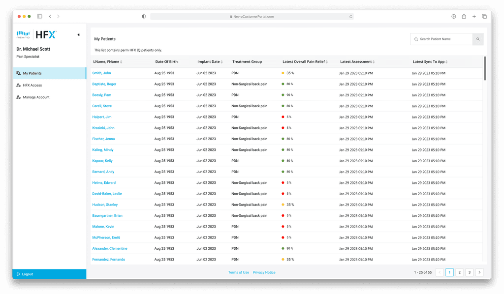
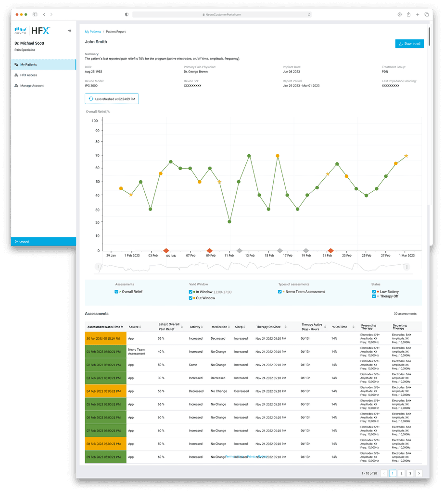
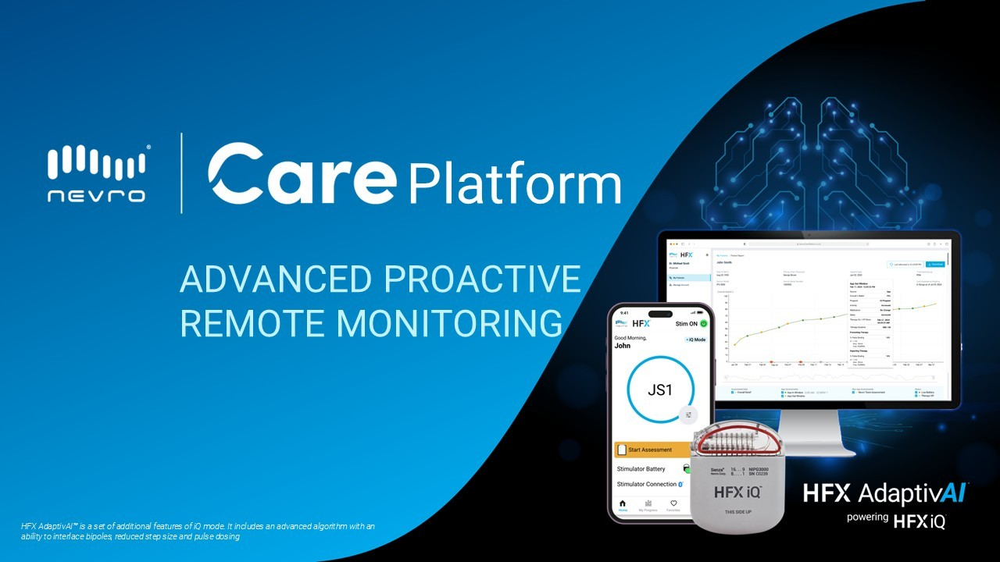
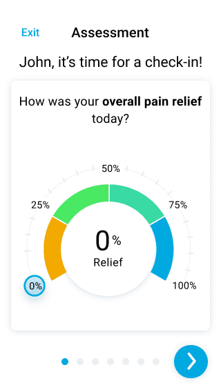
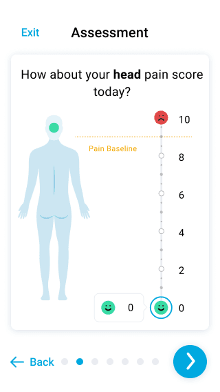
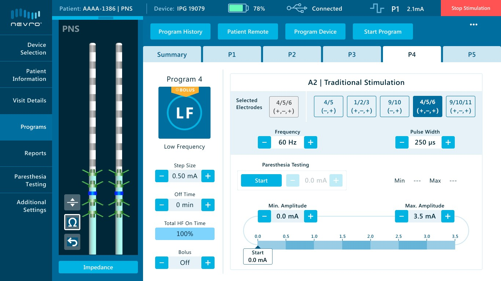
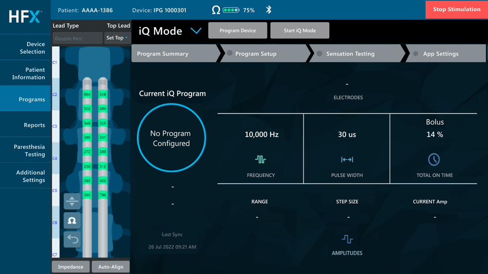
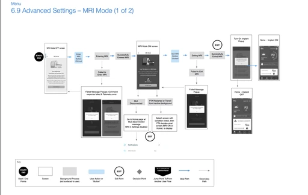
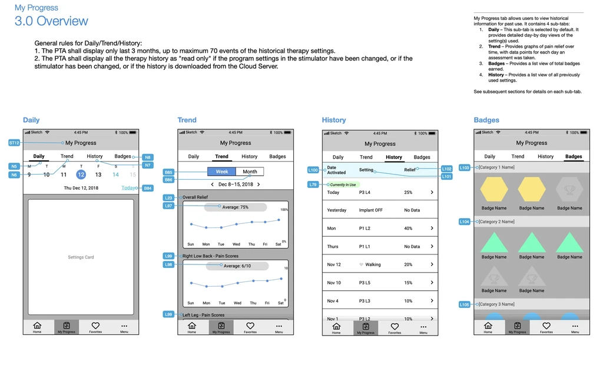
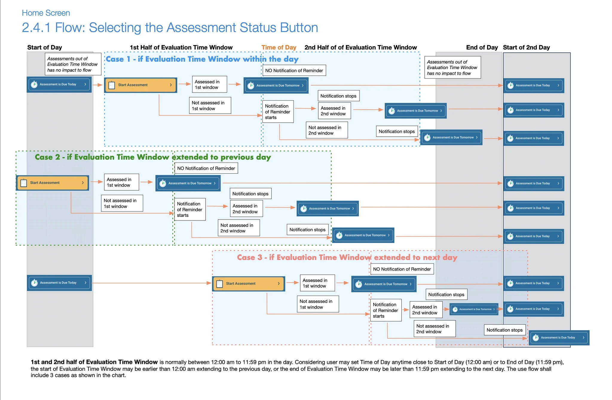

All work
Nevro
Design and front-end · Nevro Corp
I was Nevro’s first in-house designer. Physicians couldn’t monitor implant patients unless the company sent an update — competitors already had remote monitoring. I did the research in clinic, then designed the HCP Portal, the patient app, and the design system. Front-end and the regulatory docs were part of the job.

Research and process
I was the only designer. I ran usability studies and sat with physicians while they used the Programmer and the existing app in clinic. They needed the last session, a trend over time, and a way to jump to the patient who needed a call — during the visit, not after.
The HCP Portal, patient app, and Programmer had been designed as separate products. I mapped how data had to move between them. Healthcare regs, security, and wireless talk to an implant all shaped what we could actually ship.
What shipped
The HCP Portal was the centerpiece — a web dashboard for one patient or a whole panel. I designed visualizations to spot who needed attention, kept urgent data up front, and put history one click in.
The patient app got a real connection to the implant so people could log pain in the moment and their physician could see it without a separate upload. That work had to hold up for people in chronic pain: readable type, contrast that survived clinic lighting, and targets you could hit on a bad day. Accessibility wasn’t a separate pass; it was part of designing for patients.
I designed and coded a design system for mobile, desktop, and email, then handed the base components to engineering so the three surfaces didn’t drift.
The MVP launched in the US. Physicians could finally look at patient data themselves. That’s table stakes in this market; Nevro just didn’t have it yet.









